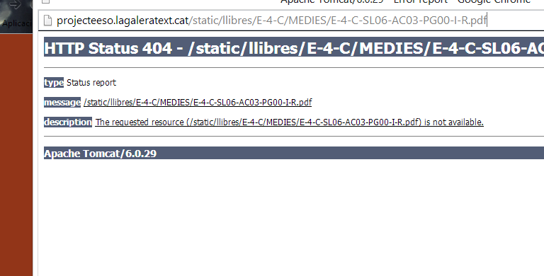

Descarregueu el nou solucionador de les activitats de La Galera Text, s'acaba de publicar la versió 2.0.1 Beta! Ara mostra les solucions en pdf als exercicis d'escriure. Torneu a descarregar-lo des d'aquí. A més a més, ara he actualitzat el botó de manera que si hi ha noves actualitacions al solucionador no caldrà que el torneu a descarregar, les actualitzacions s'instalaran soles.
Envia els teus comentaris a hulehule20@gmail.com per ajudar-me a solucionar problemes.
Instalació
Per Instalar-ho, és ben senzill. Només has d'arrastrar el botó que hi ha més avall a la teva barra de preferits.
Primer, afegeix aquesta pàgina a favorits (Clican't a la estrella)
A continuació veuràs l'enllaç a la teva barra de favorits:
Cliques amb el botó dret a l'enllaç i li dius a "Editar". Et sortirà una finestra com aquesta:

Ara només has de canviar el camp URL amb el següent i clicar a guardar:
Instruccions
Fer servir la versió 2 del Solucionador és més fàcil i efectiu! Només heu de clicar el botó des de la vostra barra de preferits quan estigueu a una activitat NO-Autocorrectora.

Us espereu un moment.. i una petita finestra apareixerà a l'esquerra de la vostra pantalla!

Si la feu gran, trobareu un pdf amb les solucions a l'activitat! Compte, no totes les preguntes tenen una solució exacta, pot ser que us trobeu amb un 'Resposta Oberta'.

SI l'activitat en què us trobeu no té resposta model o es tracta d'una activitat autocorrectora us sortirà aquesta finestra. Aquesta activitat l'haureu de fer vosaltres, hem sap greu!

Per mesures de seguretat, la finestra es tancarà automàticament passats 2 minuts des de la seva obertura.
Sobre...
Aquest Script ha estat desenvolupat per Marc Clascà. Estic treballant en més i de més tipus, així que estigueu atents! Per qualsevol consulta envieu un correu electrònic a hulehule20@gmail.com
Pels més interessats entreu a la pàgina de GitHub i col·laboreu!